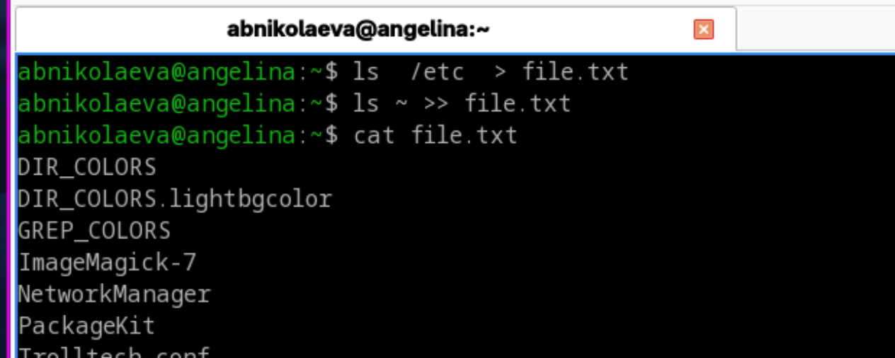
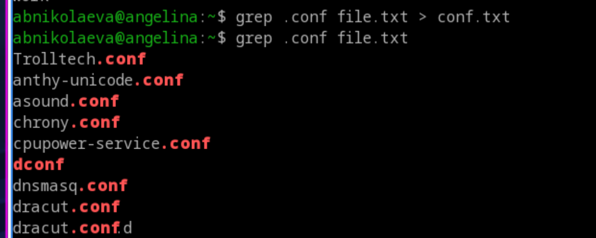
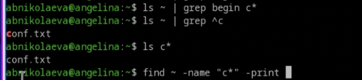
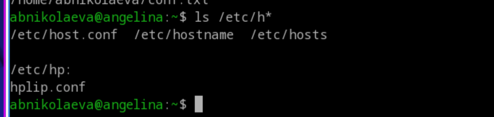
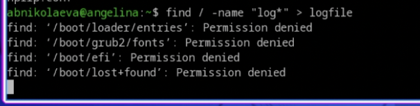
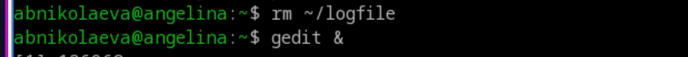
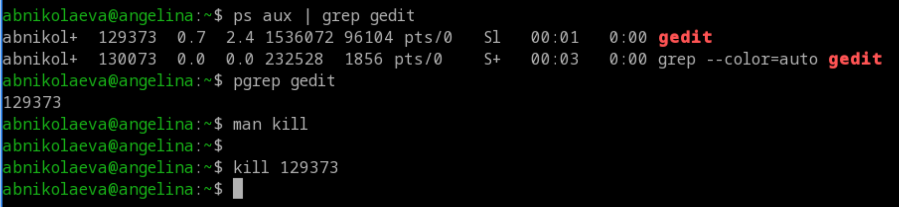
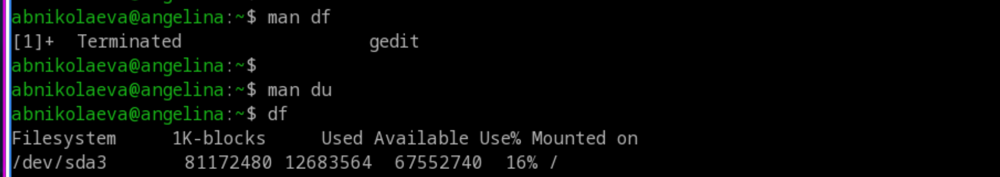
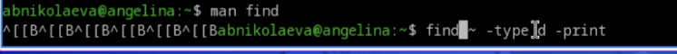

Лабораторная работа №8
Операционные системы
Николаева А. Б.
Российский университет дружбы народов, Москва, Россия
15 июня 2026
Информация
Докладчик
- Николаева Ангелина Борисовна
- Студентка НКАбд-04-25
- Российский университет дружбы народов
- [1032253612@rudn.ru]

Цель работы
- ознакомление с инструментами поиска файлов и фильтрации текстовых данных.
- приобретение практических навыков: по управлению процессами (и заданиями), по проверке использования диска и обслуживанию файловых систем.
Задание
- Осуществите вход в систему, используя соответствующее имя пользователя.
- Запишите в файл file.txt названия файлов, содержащихся в каталоге /etc. Допишите в этот же файл названия файлов, содержащихся в вашем домашнем каталоге.
- Выведите имена всех файлов из file.txt, имеющих расширение .conf, после чего запишите их в новый текстовой файл conf.txt.
- Определите, какие файлы в вашем домашнем каталоге имеют имена, начинавшиеся с символа c? Предложите несколько вариантов, как это сделать.
- Выведите на экран (по странично) имена файлов из каталога /etc, начинающиеся с символа h.
- Запустите в фоновом режиме процесс, который будет записывать в файл ~/logfile файлы, имена которых начинаются с log.
- Удалите файл ~/logfile.
- Запустите из консоли в фоновом режиме редактор gedit.
- Определите идентификатор процесса gedit, используя команду ps, конвейер и фильтр grep. Как ещё можно определить идентификатор процесса?
- Прочтите справку (man) команды kill, после чего используйте её для завершения процесса gedit.
- Выполните команды df и du, предварительно получив более подробную информацию об этих командах, с помощью команды man.
- Воспользовавшись справкой команды find, выведите имена всех директорий, имеющихся в вашем домашнем каталоге.
Выполнение лабораторной работы
- Осуществляю вход в систему, используя соответствующее имя пользователя.
- Записываю в файл file.txt названия файлов, содержащихся в каталоге /etc. Дописываю в этот же файл названия файлов, содержащихся в моём домашнем каталоге.

- Вывожу имена всех файлов из file.txt, имеющих расширение .conf, после чего записываю их в новый текстовой файл conf.txt.

- Определяю, какие файлы в вашем домашнем каталоге имеют имена, начинавшиеся с символа c. Пишу несколько вариантов, как это сделать.

- Вывожу на экран (по странично) имена файлов из каталога /etc, начинающиеся с символа h.

- Запускаю в фоновом режиме процесс, который будет записывать в файл ~/logfile файлы, имена которых начинаются с log.

- Удаляю файл ~/logfile.
- Запускаю из консоли в фоновом режиме редактор gedit.

- Определяю идентификатор процесса gedit, используя команду ps, конвейер и фильтр grep.
- Читаю справку (man) команды kill, после чего использую её для завершения процесса gedit.

- Выполняю команды df и du, предварительно получив более подробную информацию об этих командах с помощью команды man.

- Воспользовавшись справкой команды find, вывожу имена всех директорий, имеющихся в вашем домашнем каталоге.

5. Выводы
Во время выполнения лабораторной работы я ознакомилась с инструментами поиска файлов и фильтрации текстовых данных, приобрела практические навыки: по управлению процессами (и заданиями), по проверке использования диска и обслуживанию файловых систем.